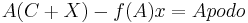

Apodo
 De: La Frikipedia, la enciclopedia extremadamente seria.
De: La Frikipedia, la enciclopedia extremadamente seria.
El apodo, una cara de nuestra humanidad, nos da a entender que somos humanos, la historia del apodo es simplemente recorrer toda la historia de la humanidad, desde que Lucy vió su reflejo en agua hasta esta mañana, que te miraste en el espejo.
¿Que es un apodo?
Mira! tiene cara de chango!
Un apodo no es más que una palabra compuesta y que data desde la época en la que los wombats crearan la estrella de la muerte, se deriva de 2 palabras: La primera signifíca ALIAS (la série no imbécil) y la otra que solo el imperio de los wombats conoce... pero ALIAS la describe exactamente. Es decir, se crea un diagrama de flujo en el cual categorizámos fractalmente que el universo mismo y toda materia gira entorno al apodo, su expresión algebráica es:

Así mismo, Albert Einstein, después de expresar la fórmula anterior determinó que:
- Hay una fuerza más poderosa que el vapor, la electricidad y la energía atómica: Un buen par de tetas.
Requisitos Para un Apodo
Bueno, integralmente debes saber que para un maldito apodo que haga que todo el mundo se ría, haga te sientas querido, famoso, popular, diós o un comediante necesitas cerebro e ingenio (que aunque los 2 últimos sean lo mismo, me vale madre!). Además de que tu víctima debe de concordar con tu sobrenombre.
Para Apodar
Recuerda que si tu vas a ser el maldito bueno para nada ingenioso HijoCENSORED debes saber ciertas cosas, con las cuales posíblemente te salves de una CENSORED o de un contraataque:
- Debes ser más alto que el sujeto
- No debes de dar compasión
- Debes tener un intelecto no superior a 130 en C.I. pero no menor a 100 C.I. (en este caso IP anónima no tiene posibilidad de poner un apodo, con decirte que vino a leer esto...)
- Debes en todo caso debe saber pelear
- Debes analizar correcta, y pacientemente a el sujeto
- En dado caso que la paciencia no sea su mejor cara, debes analizar rapida pero precisamente a el sujeto
- Debes tener en cuenta que no todo en la vida es humillar... por lo cual debes apurarse en hacerlo
- Deberías tener secuaces, amigos, compañeros o gatos para defenderlo en caso de no cumplir el punto 1, 3 y 4...
- Deberías saber que 2+2=pez tal y como lo decretan la decimo-ochenta y novena nueve mil Ley de Newton
- Debes saber que "a+b=c", en resumen, un considerable conocimiento alfabético
- Debes de respetar las leyes judiciales de tu entidad
- Deberías de correr como hombre a bar gay en caso de no contar con los puntos anteriores y atreverse a poner uno...
- Se supone que debes tener la habilidad especial de devolver el apodo o crítica inteligente y sagazmente
- Debes de odiar a los emos
Puntos claves
A este lo podríamos llamar... eh... no se me ocurre nada
La regla de una mujer oro:
- Un apodo debe estar bien argumentado (y eso es un punto clave) vamos, es tonto que a una persona le llames culto si escribe en la Inciclopedia, o que a este artículo le pongas la plantilla de Maricona por que ofende a la inciclopedia.
- Un apodo debe de ser con alguien con el que ya hayas entablado una conversación por más de
3 segundos 5 veces, recuerda que puede darte una porculiza que termina con tu vida comediante, o peor! decirle a la maestra (admitamoslo, aún hay niños que parecen de primaria en una facultad preparatoria).
- Por más que llores la justicia es ciega, y retrasada, por lo cual al que le pusiste el apodo puede ser igual o mejor que tú apodando, y por ello puede joderte a tí y se revierte el papel.
Anatomía

¡SANTO DIOS! ¿!QUE ES ESO!? En efecto, analizaremos esto, busca en una enciclopedia buena como la wikipedia que tienes arrumbada en tu habitación que signifíca anatomía:
Muchos, muchos puntos a tomar
- Cara (forma)
- Complexión
- Ojos (es raro encontrar un bizco, de seguro IP anónima te podrá ayudar)
- Naríz (uno de los mejores puntos)
- Manos
- Patas y Pies DAH!
-
Hocico Boca
- Página de Usuario
- Orejas (la otra divertida)
- Color de piel (no es racismo, ¡Pero se lleva el premio!)
- Orientación Sexual (si es gay le va a valer lo que le digas, así que aprovecha)
- Escuela (si es de La Salle eliminalo sin misericordia)
- Posición Económica (la peor que podrías tomar, pues si lo haces te tomarán
por culo como pijo gay o como inciclopedista)
- Lo que quieras...
Autor(es):
- Frikiman
- Veni Vidi Vici
- Dark temptation
- Kevrochi
- Breed
- Harry El del Pote
- El.wey.que.no.sabe.nada
- AaaAxonKowe
- Pasadodetueste
- Windrumer
Frikipedia 2005-2016, Licencia
GFDL 1.2 - Extraído por FrikiLeaks